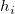

残差は次のように定義されます。
残差プロットは回帰の質を評価するのに使用できます。現在、5種類の残差プロットが線形フィットダイアログボックスでサポートされています。
これらの残差プロットは回帰の質を評価するのに使用できます。定数分散、変数の独立性、分布の正規性のような残差についての統計的な仮定を調べることができます。特定の回帰モデルに対してこれらの仮定が真となるためには、残差は0を中心としてランダムに分布している必要があります。
異なるタイプの残差プロットは、これらの仮定の有効性をチェックするのに使用でき、モデルを改良するための情報を提供します。例えば、回帰が良い場合、残差の散布図は乱雑になります。残差は傾向を示しません。傾向は残差が独立していないことを示します。一方、残差のヒストグラムプロットは、対称のベル型分布で表され、正規性の仮定が真であることを示します。
内容 |
増加傾向を示す残差プロット(下図参照)は、誤差分散が独立変数と共に増加し、減少傾向を表す分布は、誤差分散が独立変数と共に減少するというこをを示しています。これらの分布のどちらも定数分散のパターンではありません。そのため、定数分散の仮定が真ではない可能性があり、回帰は良いものではないことを示しています。一方、水平帯のパターンは残差の分散が定数であることを示しています。
残差 と データの順序のプロットは、データが時系列の場合の実験プロセスでの分散のずれ(下図参照)をチェックするのに使用されます。残差は0を中心にランダムに分布し、それは処理中にずれは生じていないことを示しています。
残差のラグプロット(下図参照)は、残差(i ) に対しての残差(i-1)プロットすることで作成され、誤差項の依存性を調べるのに役立ちます。ラグプロットがランダムではないパターンでは、分散はランダムでは無いことを示します。
分析されるデータが時系列(順次記録されるデータ)の場合、残差とデータの順序 のプロットは、誤差項と時間の相関を反映します。0を中心に変動するパターンは、誤差項に依存性があることを示しています。
残差ラグプロットは誤差項の独立性を示します。
時系列データに対する残差プロット
残差のヒストグラムは分散が正規分布しているかどうかを調べるのに使用します。0を中心に分布している対称なベル型のヒストグラムは正規性の仮定が真であることを示しています。ヒストグラムで偶然誤差が正規分布しないことを示している場合、モデルの仮定が違っている可能性があります。
残差のヒストグラムは偏差が正規分布していることを示しています。
残差の正規確率プロットは、分散が正規分布しているかどうかを調べるのに使用します。結果のプロットはおおよそ線形で、誤差範囲は正規分布していると仮定することができます。プロットはパーセンタイル対順序化された残差をベースにしており、パーセンタイルは次のように仮定されます。
}{(n+\frac{1}{4})}")
ここで、n はデータセットの合計数で、i はi 番目のデータです。残差の正規確率プロットは次のようになります。
残差の正規確率プロット
残差プロットのパターンの構造は、回帰モデルの正当性をチェックするだけでなく、どのように改良するかというヒントも提供されます。例えば、残差と独立変数のプロットの曲線パターンは、より高い次数の項がフィットモデルに追加されるべきだということを示しています。
これは1つのサンプルですが、残差プロットのパターンから調査することによる推定ができる事例はたくさんあります。詳細については、この章にある統計に関する参考文献を参照することをお勧めします。
データの外れ値を探す場合、残差を標準化、スチューデント化、 スチューデント化削除の残差に変換すると役立ちます。これら変換した残差は次のように計算できます。
標準化

スチューデント化
内部基準化残差、とも呼ばれます。
スチューデント化削除
外部基準化残差、とも呼ばれます。

スチューデント化とスチューデント化削除の残差の数式で、  は、行列P のi 番目の対角要素です。
ここで、 F は、非線形回帰モデルに対する部分派生行列です。
線形回帰モデルで、独立行列 X は Fに等しくなります。
^{-1}X^{\prime }")
変換した残差の使用例として、標準化残差は回帰の標準誤差によって残差の値を再スケールし、データは正規分布しているという回帰の仮定の場合、約95%のデータがフィット曲線を中心として2σ の範囲内に入ります。逆に、標準化残差の95%は、残差プロットの-2から+2の範囲に入ります。
残差プロットの分散は、外れ値を検出するのに大変役立ちます。例えば、標準化残差と独立変数プロットで、残差は回帰の標準誤差で再スケールされます。データが正規分布しており、データポイントの約95%がフィット曲線の2σ 以内にあるという回帰の前提の場合、標準化した残差の95%が、以下のグラフの-2から+2の間に入ります。
これらのポイントは外れ値の可能性があるので、この範囲の外側の残差を調べます。
OriginProの組込み関数を使って曲面フィットを行うとき、XY平面に残差の等高線を生成します。等高線の区間は、シグマの値によって決まります(モデル誤差)。2Dフィットの場合と同様に、回帰曲面のフィットの良さは残差の等高線プロットで認識できるパターンを生成しません。